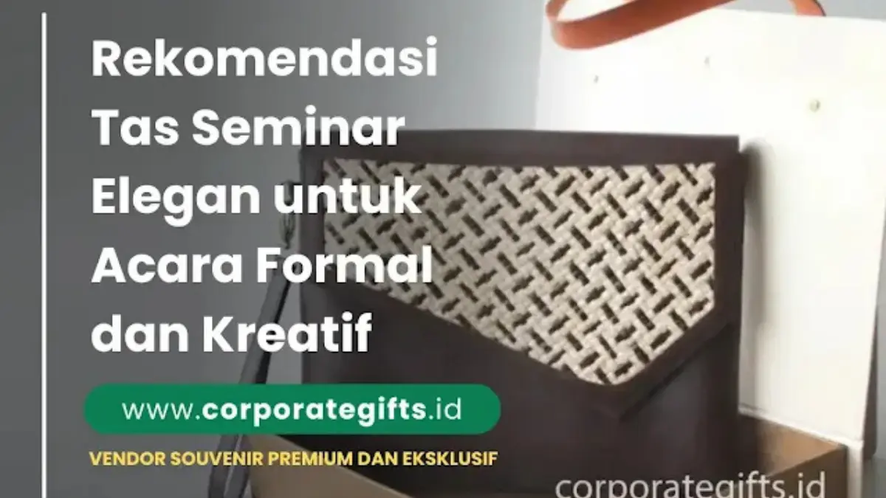

Corporate Gifts ID - Tas seminar elegan yang tepat adalah tas jinjing kulit sintetis atau tas laptop untuk kegiatan formal, serta tote bag kanvas atau tas ransel custom untuk acara kasual maupun kreatif. Pemilihan jenis tas ini menentukan impresi pertama peserta terhadap profesionalisme penyelenggara, karena tas berfungsi sebagai media promosi berjalan yang akan terus dibawa dan digunakan berulang kali setelah forum kegiatan selesai.
Artikel ini merangkum rekomendasi model tas seminar berdasarkan karakter acara, estimasi kisaran harga material, serta tips menentukan spesifikasi tas terbaik yang selaras dengan tema dan pagu anggaran institusi Anda.
Poin Kunci Pemilihan Tas Seminar:
- Representasi Identitas Acara: Tas seminar mencerminkan standar mutu dan kredibilitas penyelenggara di mata peserta dan tamu VIP.
- Segmentasi Acara Formal: Tas kulit sintetis PU dan tas laptop memberikan nuansa eksklusif untuk seminar bisnis dan konferensi nasional.
- Segmentasi Acara Kreatif: Tote bag kanvas tebal dan sling bag menjadi pilihan favorit yang ramah lingkungan dan fleksibel dicustom.
- Nilai Guna Jangka Panjang: Tas yang kokoh dan fungsional akan digunakan bertahun-tahun pasca acara, memaksimalkan Return on Investment (ROI) promosi.
- Kustomisasi Logo Presisi: Penerapan logo via bordir komputer, sablon presisi, atau deboss elegan memperkuat daya tarik visual.
Mengapa Tas Seminar Penting untuk Citra Acara
Setiap kegiatan seminar yang sukses selalu meninggalkan kesan mendalam dan berkelas, tidak hanya dari materi pembicara di panggung, tetapi juga dari detail fasilitas seperti tas seminar yang dibagikan. Tas bukan sekadar wadah untuk membawa dokumen materi, paket seminar kit, dan suvenir, melainkan media promosi yang mencerminkan identitas dan kredibilitas institusi penyelenggara.
Dalam dunia korporasi, tas seminar kantor kerap menjadi representasi visual dari brand. Sementara di kalangan universitas, lembaga pelatihan, atau komunitas kreatif, tas menjadi cinderamata fungsional yang meninggalkan kesan personal. Dengan desain yang tepat, tas promosi ini akan terus dipakai dalam rutinitas kerja harian peserta.
Pilihan Tas Seminar untuk Acara Formal
Untuk kegiatan berskala besar seperti konferensi tingkat tinggi, simposium nasional, pelatihan eksekutif, atau rapat dinas tahunan, kesan elegan dan prestisius adalah prioritas utama. Berikut tiga model tas seminar eksklusif yang sangat direkomendasikan:
1. Tas Jinjing Kulit (Leather Handbag)
Tas jinjing berbahan kulit sintetis PU premium atau kulit asli memberikan kesan berkelas tinggi. Banyak instansi kementerian, BUMN, perbankan, dan perusahaan multinasional memilih jenis ini untuk pembicara utama, narasumber, dan tamu kehormatan VIP.
Tekstur kulit yang lembut dan tahan air dipadukan dengan teknik branding deboss atau foil emas menjadikan tas ini cinderamata formal yang sangat prestisius.
2. Tas Laptop Multifungsi
Untuk seminar teknologi informasi, workshop digital marketing, atau pelatihan manajemen profesional, tas laptop merupakan pilihan yang sangat fungsional. Dilengkapi kompartemen busa peredam benturan (shockproof padding) dan slot organizer charger, tas ini sangat membantu mobilitas kerja para profesional modern.
3. Tas Ransel Minimalis Eksekutif
Model ransel kini semakin diminati untuk acara korporat dinamis. Desain tas ransel minimalis dengan bahan cordura atau polyester tahan air menghadirkan kenyamanan ergonomis saat dibawa bepergian antar-kota.

Pilihan material kanvas tebal dan sablon digital presisi untuk kebutuhan seminar bertema kreatif dan lingkungan.
Pilihan Tas Seminar untuk Acara Kasual dan Kreatif
Tidak semua forum membutuhkan format yang kaku. Banyak seminar justru dirancang dengan suasana santai dan interaktif, seperti pelatihan UMKM, workshop startup, hingga gathering komunitas. Untuk segmen ini, pilihan tas yang ringan, ramah lingkungan, dan modis adalah pilihan terbaik:
1. Tote Bag Kanvas Eco-Friendly
Tote bag kanvas premium adalah pilihan nomor satu untuk seminar bertema kreatif, seni, maupun inisiatif keberlanjutan (ESG). Material katun kanvas tebal memiliki daya tampung kuat, dapat dicuci ulang, serta menyediakan area cetak luas untuk ilustrasi grafis dan logo acara.
2. Tas Selempang (Sling Bag)
Sling bag atau tas selempang compact sangat digemari oleh peserta muda dan mahasiswa pada workshop luar ruangan (outdoor activity). Desainnya yang ringkas memudahkan mobilitas peserta membawa ponsel, notebook saku, dompet, dan perlengkapan kecil lainnya.
3. Tas Ransel Custom (Backpack)
Bagi kegiatan training kepemimpinan berskala multi-hari (multi-day workshop), ransel custom dengan bordir logo komputer memberikan durabilitas maksimal dan kesan kekeluargaan yang erat bagi seluruh peserta.
Kisaran Harga Tas Seminar Berdasarkan Material
Estimasi biaya pengadaan tas seminar dipengaruhi oleh pilihan bahan, aksesoris resleting, teknik cetak branding, dan kuantitas pesanan:
| Model & Material Tas | Kisaran Harga (Pcs) | Karakteristik & Keunggulan | Rekomendasi Acara |
|---|---|---|---|
| Tas Spunbond Custom | Rp10.000 – Rp20.000 | Ekonomis, ringan, pengerjaan cepat | Sosialisasi Massal, Webinar Kit |
| Tote Bag Kanvas / Blacu | Rp25.000 – Rp50.000 | Ramah lingkungan, kuat, mudah dicustom | Seminar Kampus, Pelatihan UMKM |
| Tas Ransel Polyester / Cordura | Rp60.000 – Rp120.000 | Tahan air, kapasitas luas, ergonomis | Training Karyawan, Outbound BUMN |
| Tas Kulit Sintetis PU Eksklusif | Rp150.000 – Rp300.000 | Tampilan mewah, deboss logo, tahan lama | Konferensi Nasional, Souvenir VIP |
Panduan Menentukan Tas Seminar yang Tepat
Untuk memastikan anggaran pengadaan tas seminar menghasilkan kepuasan optimal, ikuti panduan kurasi praktis berikut:
- Sesuaikan dengan Tema & Karakter Acara: Pilih model tas yang mencerminkan suasana forum (formal, edukatif, atau kreatif).
- Pertimbangkan Fungsi & Kapasitas: Pastikan ukuran tas memadai untuk membawa map dokumen A4, tumbler souvenir, notebook agenda, dan laptop peserta.
- Sesuaikan dengan Alokasi Budget: Lakukan perencanaan kuantitas pesanan sejak awal agar mendapatkan tier harga grosir terbaik.
- Pastikan Kualitas Jahitan & Branding: Jahitan tepi harus rapi dan kuat (double stitch), serta logo dicetak presisi agar nama institusi Anda terwakili secara sempurna.